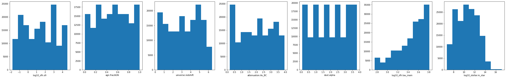
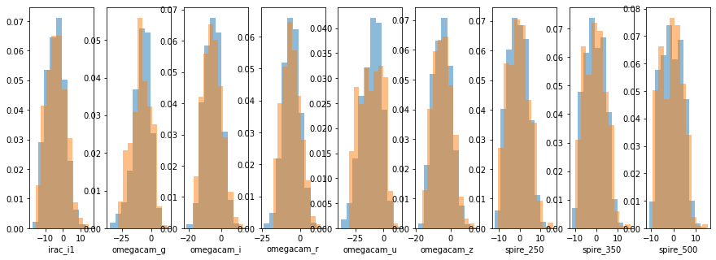
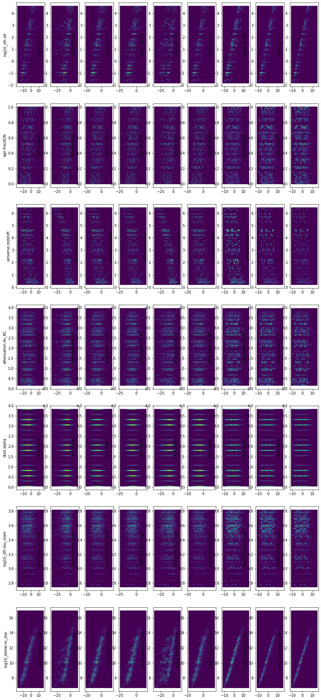
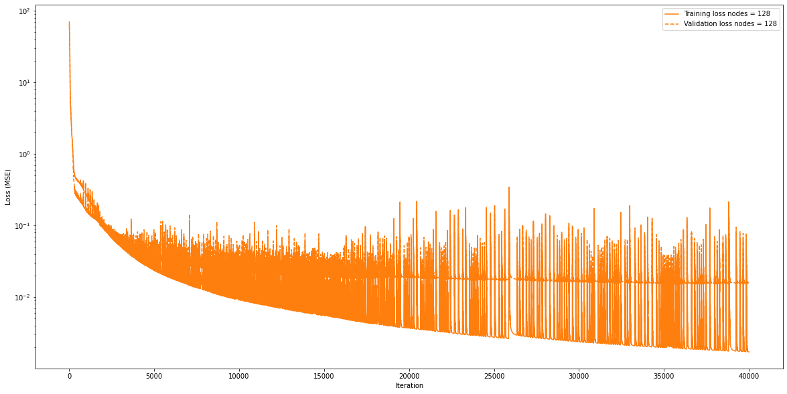
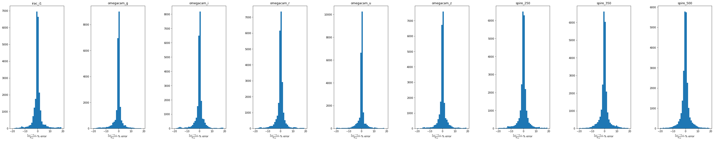
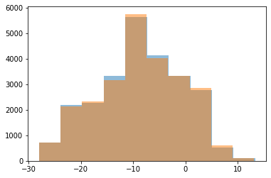
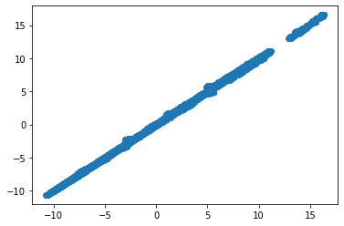
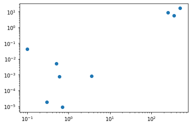

[1]:
from google.colab import drive
drive.mount('/content/drive')
Mounted at /content/drive
[2]:
cd /content/drive/MyDrive/WORK/XID_plus
/content/drive/MyDrive/WORK/XID_plus
[3]:
import jax.numpy as np
from jax import grad, jit, vmap
from jax import random
import numpy as onp
from functools import partial # for use with vmap
from jax import jit # for compiling functions for speedup
from jax.experimental import stax # neural network library
from jax.experimental.stax import Conv, Dense, MaxPool, Relu, Flatten, LogSoftmax, LeakyRelu # neural network layers
from jax.experimental import optimizers
from jax.tree_util import tree_multimap # Element-wise manipulation of collections of numpy arrays
import matplotlib.pyplot as plt # visualization
# Generate key which is used to generate random numbers
key = random.PRNGKey(1)
/usr/local/lib/python3.7/dist-packages/jax/experimental/stax.py:30: FutureWarning: jax.experimental.stax is deprecated, import jax.example_libraries.stax instead
FutureWarning)
/usr/local/lib/python3.7/dist-packages/jax/experimental/optimizers.py:30: FutureWarning: jax.experimental.optimizers is deprecated, import jax.example_libraries.optimizers instead
FutureWarning)
[4]:
from psutil import virtual_memory
ram_gb = virtual_memory().total / 1e9
print('Your runtime has {:.1f} gigabytes of available RAM\n'.format(ram_gb))
if ram_gb < 20:
print('Not using a high-RAM runtime')
else:
print('You are using a high-RAM runtime!')
gpu_info = !nvidia-smi
gpu_info = '\n'.join(gpu_info)
if gpu_info.find('failed') >= 0:
print('Not connected to a GPU')
else:
print(gpu_info)
Your runtime has 27.3 gigabytes of available RAM
You are using a high-RAM runtime!
Fri Mar 4 10:54:09 2022
+-----------------------------------------------------------------------------+
| NVIDIA-SMI 460.32.03 Driver Version: 460.32.03 CUDA Version: 11.2 |
|-------------------------------+----------------------+----------------------+
| GPU Name Persistence-M| Bus-Id Disp.A | Volatile Uncorr. ECC |
| Fan Temp Perf Pwr:Usage/Cap| Memory-Usage | GPU-Util Compute M. |
| | | MIG M. |
|===============================+======================+======================|
| 0 Tesla T4 Off | 00000000:00:04.0 Off | 0 |
| N/A 55C P0 28W / 70W | 13610MiB / 15109MiB | 0% Default |
| | | N/A |
+-------------------------------+----------------------+----------------------+
+-----------------------------------------------------------------------------+
| Processes: |
| GPU GI CI PID Type Process name GPU Memory |
| ID ID Usage |
|=============================================================================|
+-----------------------------------------------------------------------------+
[5]:
from astropy.table import Table, vstack
[6]:
data=Table.read('./docs/notebooks/examples/SED_emulator/kasia_gen_SEDs_zall.fits')
[7]:
data['log10_sfh.sfr']=onp.log10(data['sfh.sfr'])
data['log10_universe.redshift']=onp.log10(data['universe.redshift'])
data['log10_dust.luminosity']=onp.log10(data['dust.luminosity'])
data['log10_sfh.tau_main']=onp.log10(data['sfh.tau_main'])
data['log10_sfh.age_main']=onp.log10(data['sfh.age_main'])
data['log10_attenuation.Av_BC']=onp.log10(data['attenuation.Av_BC'])
data['log10_stellar.m_star']=onp.log10(data['stellar.m_star'])
DeepNet building¶
I will build a multi input, multi output deepnet model as my emulator, with parameters as input and the observed flux as outputs. I will train on log10 flux to make the model easier to train, and have already standarised the input parameters. I wilkl be using stax which can be thought of as the Keras equivalent for JAX. This blog was useful starting point.
[8]:
data.colnames[1:10]
[8]:
['irac_i1',
'omegacam_g',
'omegacam_i',
'omegacam_r',
'omegacam_u',
'omegacam_z',
'spire_250',
'spire_350',
'spire_500']
[9]:
#init_input_cols=['log10_sfh.sfr','agn.fracAGN','universe.redshift', 'attenuation.Av_BC','dust.alpha','log10_sfh.tau_main','log10_sfh.age_main']
init_input_cols=['log10_sfh.sfr','agn.fracAGN','universe.redshift', 'attenuation.Av_BC','dust.alpha','log10_sfh.tau_main','log10_stellar.m_star']
output_cols=data.colnames[1:10]
[10]:
for i in output_cols:
ind=data[i]<=0.0
print(ind.sum())
data[i][ind]=1.0E-30
0
0
0
0
0
0
0
0
0
[11]:
len(data)
[11]:
155520
I will use batches to help train the network
[12]:
inner_batch_size=1000
train_ind=onp.round(130000).astype(int)
val_ind=onp.round(155000)
train=data[0:train_ind]
validation=data[train_ind:val_ind]
input_cols=init_input_cols#['std_'+s for s in init_input_cols]
train_batch_X=np.asarray([i.data for i in train[input_cols].values()]).reshape(len(input_cols)
,inner_batch_size,onp.round(len(train)/inner_batch_size).astype(int)).T.astype(float)
train_batch_Y=np.asarray([np.log(i.data.astype('f8')) for i in train[output_cols].values()]).reshape(len(output_cols),
inner_batch_size,onp.round(len(train)/inner_batch_size).astype(int)).T.astype(float)
validation_batch_X=np.asarray([i.data for i in validation[input_cols].values()]).reshape(len(input_cols)
,inner_batch_size,onp.round(len(validation)/inner_batch_size).astype(int)).T.astype(float)
validation_batch_Y=np.asarray([np.log(i.data.astype('f8')) for i in validation[output_cols].values()]).reshape(len(output_cols),
inner_batch_size,onp.round(len(validation)/inner_batch_size).astype(int)).T.astype(float)
[13]:
fig,axes=plt.subplots(1,len(input_cols),figsize=(6*len(input_cols),6))
for i in range(0,len(input_cols)):
axes[i].hist(data[input_cols[i]])
axes[i].set_xlabel(input_cols[i])

[14]:
fig,axes=plt.subplots(1,9,figsize=(15,5))
for i in range(0,9):
axes[i].hist(train_batch_Y[:,:,i].flatten()[onp.isfinite(train_batch_Y[:,:,i].flatten())],alpha=0.5,density=True)
axes[i].hist(validation_batch_Y[:,:,i].flatten()[np.isfinite(validation_batch_Y[:,:,i].flatten())],alpha=0.5,density=True)
axes[i].set_xlabel(output_cols[i])

[15]:
fig,axes=plt.subplots(len(input_cols),len(output_cols),figsize=(15,len(input_cols)*5))
for i in range(0,len(output_cols)):
for j in range(0,len(input_cols)):
axes[j,i].hexbin(train_batch_Y[:,:,i].flatten(),train_batch_X[:,:,j].flatten())
axes[j,i].set_ylabel(input_cols[j])

[16]:
def loss(params, inputs, targets):
# Computes average loss for the batch
predictions = net_apply(params, inputs)
return np.mean((targets - predictions)**2)
def batch_loss(p,x_b,y_b):
loss_b=vmap(partial(loss,p))(x_b,y_b)
return np.mean(loss_b)
@jit
def step(i, opt_state, x1, y1):
p = get_params(opt_state)
g = grad(batch_loss)(p, x1, y1)
loss_tmp=batch_loss(p,x1,y1)
return opt_update(i, g, opt_state),loss_tmp,g
[17]:
nodes=[128]
n_iter=40000
np_batched_loss_2 = onp.zeros((n_iter,len(nodes)))
valid_loss2= onp.zeros((n_iter,len(nodes)))
net_params_all=[]
for n in range(0,len(nodes)):
# Use stax to set up network initialization and evaluation functions
net_init, net_apply = stax.serial(
Dense(nodes[n]), LeakyRelu,
Dense(nodes[n]), LeakyRelu,
Dense(nodes[n]), LeakyRelu,
Dense(nodes[n]), LeakyRelu,
Dense(len(output_cols))
)
in_shape = (-1, len(input_cols),)
opt_init, opt_update, get_params= optimizers.adam(step_size=5e-4)
out_shape, net_params = net_init(key,in_shape)
opt_state = opt_init(net_params)
p = get_params(opt_state)
for i in range(n_iter):
opt_state, l,g = step(i, opt_state, train_batch_X, train_batch_Y)
p = get_params(opt_state)
valid_loss2[i,n]=batch_loss(p,validation_batch_X,validation_batch_Y)
np_batched_loss_2[i,n]=l
if i % 1000 == 0:
print(i,n,l)
net_params_all.append(get_params(opt_state))
0 0 63.474503
1000 0 0.26758957
2000 0 0.110796206
3000 0 0.05160807
4000 0 0.032801747
5000 0 0.031441387
6000 0 0.018629033
7000 0 0.029999476
8000 0 0.01325999
9000 0 0.010469983
10000 0 0.010494094
11000 0 0.008337157
12000 0 0.0075510615
13000 0 0.0069223037
14000 0 0.015977306
15000 0 0.0057012024
16000 0 0.006015859
17000 0 0.0048483736
18000 0 0.01717395
19000 0 0.007346284
20000 0 0.005003949
21000 0 0.012858329
22000 0 0.0035996938
23000 0 0.0030910042
24000 0 0.0029982668
25000 0 0.0027206514
26000 0 0.0036074168
27000 0 0.0027767855
28000 0 0.0025964768
29000 0 0.008720864
30000 0 0.0031174594
31000 0 0.0023126202
32000 0 0.0025894884
33000 0 0.05974069
34000 0 0.0020228522
35000 0 0.0025242888
36000 0 0.01332842
37000 0 0.0021807556
38000 0 0.005523968
39000 0 0.0018567088
[18]:
import seaborn as sns
[ ]:
[19]:
plt.figure(figsize=(20,10))
colors=sns.color_palette("tab10")
for n in range(0,len(nodes)):
#plt.semilogy(np_batched_loss_1[:,n],label='Training loss nodes = {}'.format(nodes[n]),color=colors[n])
#plt.semilogy(valid_loss[:,n],label='Validation loss nodes = {}'.format(nodes[n]),color=colors[n],linestyle='--')
plt.semilogy(np_batched_loss_2[:,n],label='Training loss nodes = {}'.format(nodes[n]),color=colors[1])
plt.semilogy(valid_loss2[:,n],label='Validation loss nodes = {}'.format(nodes[n]),color=colors[1],linestyle='--')
plt.xlabel('Iteration')
plt.ylabel('Loss (MSE)')
plt.legend()
[19]:
<matplotlib.legend.Legend at 0x7f4d180a40d0>

[20]:
valid_loss2[-10:]
[20]:
array([[0.01582148],
[0.01582557],
[0.01581624],
[0.01582567],
[0.01581164],
[0.01582526],
[0.01580691],
[0.0158254 ],
[0.0158011 ],
[0.0158256 ]])
Investigate performance of each band of emulator¶
To visulise performance of the trainied emulator, I will show the difference between real and emulated for each band.
[21]:
net_params = get_params(opt_state)
predictions = net_apply(net_params,validation_batch_X)
[22]:
res=((predictions)-(validation_batch_Y))/validation_batch_Y
fig,axes=plt.subplots(1,len(output_cols),figsize=(50,len(output_cols)))
for i in range(0,len(output_cols)):
axes[i].hist(res[:,:,i].flatten()*100.0,bins=np.arange(-20,20))
axes[i].set_title(output_cols[i])
axes[i].set_xlabel(r'$\frac{f_{pred} - f_{True}}{f_{True}} \ \%$ error')
plt.subplots_adjust(wspace=0.5)

[23]:
a=predictions[:,:,6].flatten()
b=validation_batch_Y[:,:,6].flatten()
[24]:
plt.hist(predictions[:,:,1].flatten(),alpha=0.5)
plt.hist(validation_batch_Y[:,:,1].flatten(),alpha=0.5)
[24]:
(array([ 720., 2128., 2336., 3171., 5749., 4021., 3323., 2848., 608.,
96.]),
array([-28.02367 , -23.906282 , -19.788895 , -15.671508 , -11.554121 ,
-7.4367332, -3.319346 , 0.7980415, 4.915429 , 9.032816 ,
13.150204 ], dtype=float32),
<a list of 10 Patch objects>)

[25]:
plt.scatter(a,b)
[25]:
<matplotlib.collections.PathCollection at 0x7f4d163fd410>

[29]:
onp.savez('./docs/notebooks/examples/SED_emulator/CIGALE_emulator_kasia_20220304_mstar',net_params,allow_pickle=True)
/usr/local/lib/python3.7/dist-packages/numpy/lib/npyio.py:719: VisibleDeprecationWarning: Creating an ndarray from ragged nested sequences (which is a list-or-tuple of lists-or-tuples-or ndarrays with different lengths or shapes) is deprecated. If you meant to do this, you must specify 'dtype=object' when creating the ndarray.
val = np.asanyarray(val)
[26]:
[27]:
plt.loglog([0.1,0.3,0.5,0.6,0.7,3.6,250.,350.0,500],np.exp(net_apply(net_params,np.array([3,0.0,1.0,3.0,3.0,3,3.1]))),'o')
[27]:
[<matplotlib.lines.Line2D at 0x7f4d163a2650>]

[28]:
['log10_sfh.sfr','agn.fracAGN','universe.redshift', 'attenuation.Av_BC','dust.alpha','log10_sfh.tau_main','log10_sfh.age_main']
[28]:
['log10_sfh.sfr',
'agn.fracAGN',
'universe.redshift',
'attenuation.Av_BC',
'dust.alpha',
'log10_sfh.tau_main',
'log10_sfh.age_main']
[28]: